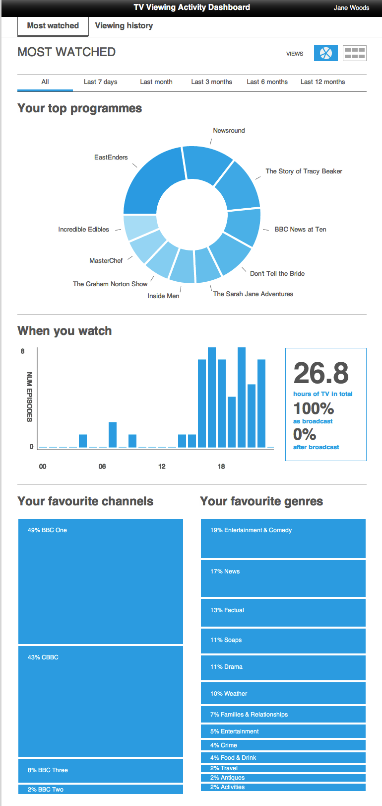
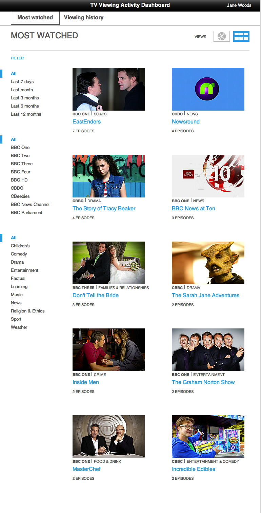
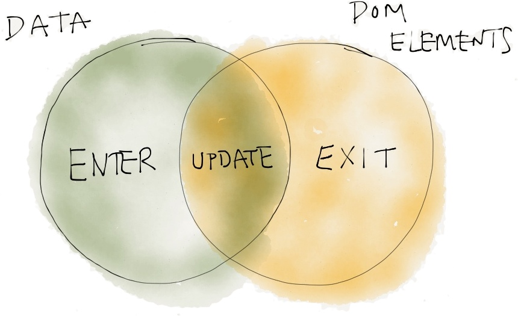
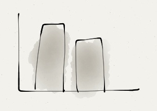
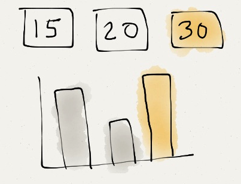
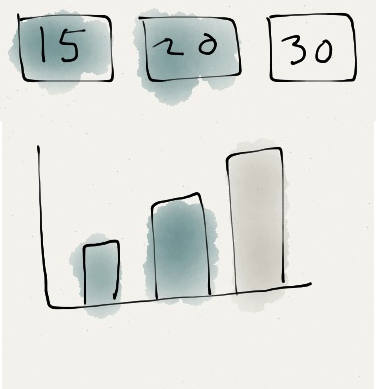

FI-Content user dashboard
Interesting technologies
About the dashboard
- part of a user study on attitudes to data collection and privacy
- visualise the programmes a participant watched during a diary study
- display on a tablet during a lab session
- show how the UI changes when new data arrives
- data rendering happens mostly on the client (using HTML/CSS/JS)
About the dashboard

About the dashboard

Interesting areas of development
- JavaScript modules & dependencies
- visualisation & updating
- binding data to views
Dan did a huge amount of data magic which isn't going to be covered :-(
JavaScript modules & dependencies
Asynchronous Module Definition
AMD specifies a mechanism for defining modules such that the module and its dependencies can be asynchronously loaded.—https://github.com/amdjs/amdjs-api/wiki/AMD
AMD example: defining a module
// models/watched-programme.js
define(
// dependencies
['util/service-map', 'util/genres', 'util/bbc-image'],
function (ServiceMap, Genres, bbcImage) {
var WatchedProgramme = function (data) {
// Extract BBC services and genres
this.serviceName = ServiceMap.find(data.service).title;
var genres = Genres.extract(data.categories);
// Image thumbnail url
this.image = bbcImage(data.pid)
};
return WatchedProgramme;
}
);AMD example: using a module
This uses the curl.js AMD loader:
// js/app.js
curl(['models/watched-programme']).then(
// when deps are loaded
function (WatchedProgramme) {
var prog = new WatchedProgramme(...);
},
// something went wrong
function (error) {
throw error;
}
);Benefits
- organise and modularise code
- encapsulate your module: control what's visible to others and the API you expose
- don't pollute the global namespace
- will work with any loader that supports AMD e.g. curl.js, require js, almond.js...
- can post-load modules only when needed although you can merge into single files for production
Annoyances
Not all libraries are AMD-aware so you have to either (in order of difficulty):- top and tail the file in a
definefunction call :-( - get an AMD plugin to do this for you *
- create a wrapper shim to load it †
- convince libraries of the amazingness of AMD and add it to the project
AMD support
- jQuery
- knockout js
- Backbone *
- Underscore *
* an AMD compatible-mirror maintained by the AMD community: https://github.com/amdjs
Visualisation
Data Driven Documents (d3)
- JavaScript data visualisation library
- Rendering engine agnostic (as long as it's DOM-based i.e. SVG, HTML)
- Provides a small core library for binding data to DOM elements
- Selections of nodes allow you to manipulate the DOM to reflect the data
- This makes it easier to create visualisations that constantly update

—http://bost.ocks.org/mike/join/
Imagine a bar chart

1. Get the selection of all bars
var rects = d3.select('svg').selectAll('rect');2. Bind data to bars
rects.data([15, 20, 30]);3. 'Enter' selection
rects.enter()
.append('rect')
.attr('x', function(d, i) { return x(i); })
.attr('y', function(d) { return height - y(d.value); })
.attr('width', 20)
.attr('height', function(d) { return y(d.value); });

4. Update selection for existing elements
rects.attr('height', function(d) { return y(d.value); });

5. Remove DOM elements
rects.exit().remove();Pros/cons
- Lots of control
- Steep learning curve you need to understand the rendering technology (DOM+CSS, SVG) and how to build your visualisation
- Loads of great examples of common/not-so-common visualisation to copy & tweak e.g. 65 examples in the d3 repo
- Heaps of detailed API docs
- Lots of helpers for: layouts (e.g. pie chart, force directed), scales, colour ranges, transitions
- Method chaining style can make things messy if you're not careful
Data binding & views
Requirement
Once a view had been rendered, we needed to simulate adding another programme to the participants watched list and see everything update
- JavaScript library
- dynamically bind data to templates written in HTML
- view model object maps data to templates
- changing data in view model updates all templates (and vice versa)
Template
Total hours: --
As broadcast:
--%
After broadcast:
--%
View model
...
// A list of programmes the user's watched
this.watched = ko.observableArray();
this.duration = ko.computed(function () {
return this.watched().reduce( function (previousValue, currentItem) {
var duration = currentItem.duration ? currentItem.duration : 0;
return previousValue + duration;
}, 0 );
}, this);
this.durationInHours = ko.computed(function () {
var secs = this.duration();
var hours = this.secsAsHours(secs);
return hours.toFixed(1);
}, this);
...Custom data bindings
define(['knockout'], function (ko) {
ko.bindingHandlers.percentage = {
update: function(element, valueAccessor, allBindingsAccessor) {
// First get the latest data that we're bound to
var value = valueAccessor();
// Next, whether or not the supplied model property is observable, get its current value
var valueUnwrapped = ko.utils.unwrapObservable(value);
element.textContent = Math.floor(valueUnwrapped * 100) + '%';
}
};
});
Extend to complex things
define([
"knockout",
"charts/bar-chart-simple"
], function (ko, BarChart) {
ko.bindingHandlers.barchart = {
init: function(element, valueAccessor, allBindingsAccessor, viewModel) {
var yAxisLabel = allBindingsAccessor().yAxisLabel,
chart = new BarChart(element, { yAxisLabel:yAxisLabel });
element.chart = chart;
chart.init();
},
update: function(element, valueAccessor, allBindingsAccessor) {
var chart = element.chart;
var data = ko.utils.unwrapObservable(valueAccessor());
chart.update(data);
}
};
});
Live updating
knockout doesn't care about where the data comes from so we mixed and matched: using xhr to load the initial list of watched programmes and then Faye to push individual programmes over a websocket.
Updating the entire UI is as simple as:
var anotherProg = new WatchedProgramme(data);
viewModel.watched.push(anotherProg);Pros/cons
- Good for knocking out quick, reactive prototypes
- Lack of structure for constructing a whole app
Knockout + Backbone = KnockBack
- Promotes reusable page widgets through bindings
A summary
- AMD is good for structuring javascript into modules
- How do we share across projects (look at "volo")?
- d3 is very flexible but needs modules to wrap common types e.g. pie chart etc
- perfect for visualisations that update in response to data
- and for creating novel visualisations
- knockout is great for data binding
- feels right to specify data in HTML rather than template
- less boilerplate for views code
- reusable widgets via bindings